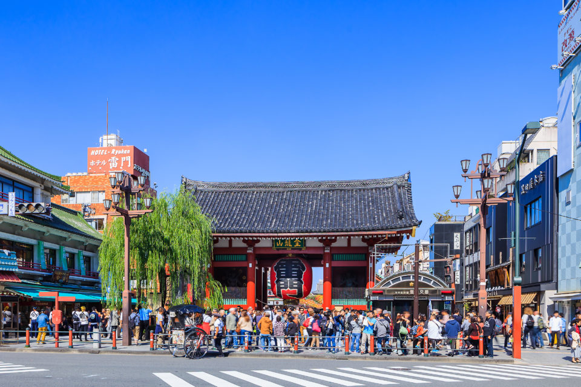
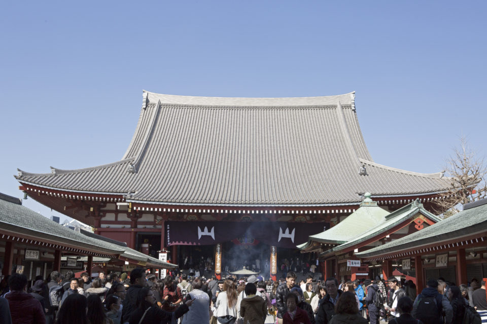
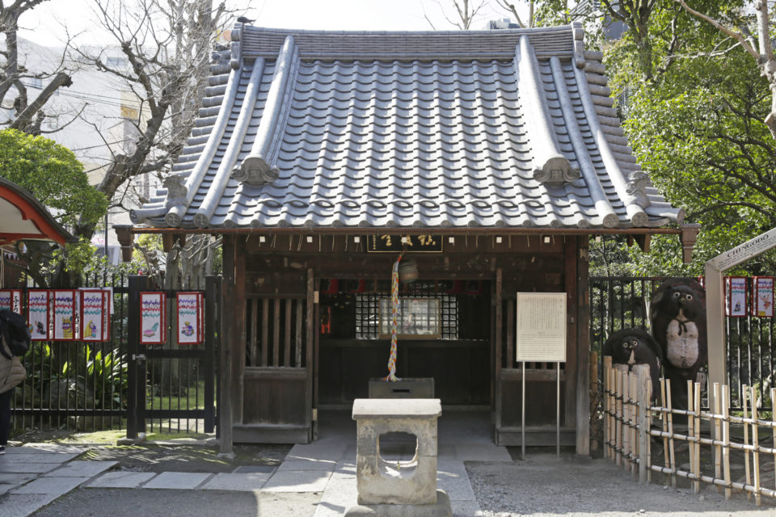
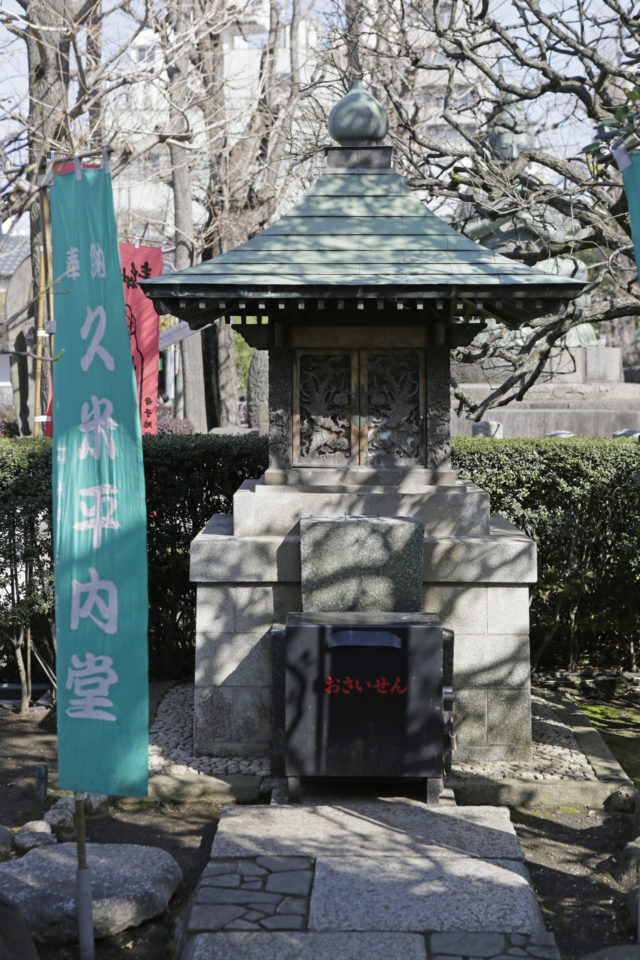
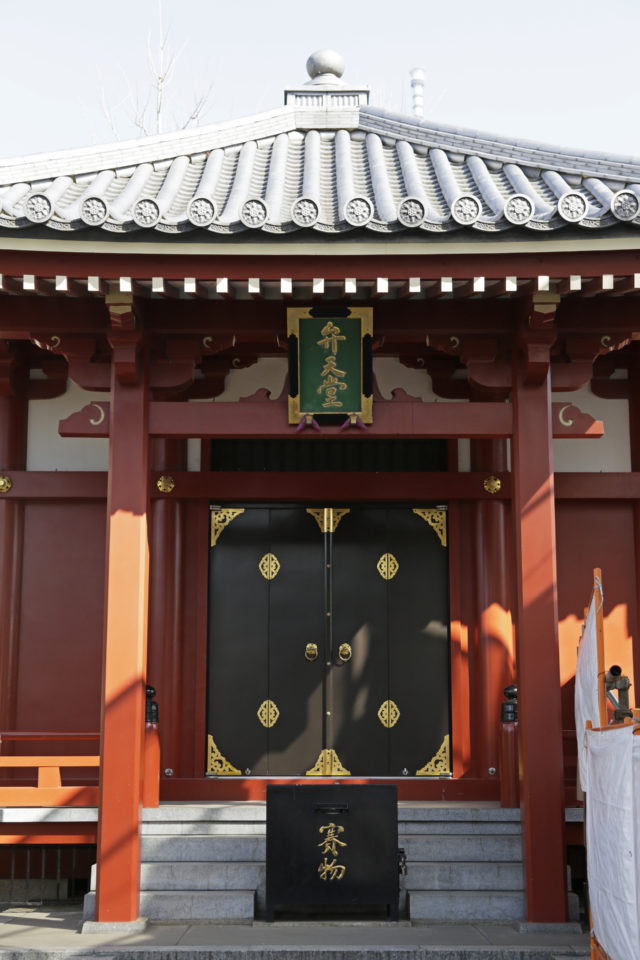
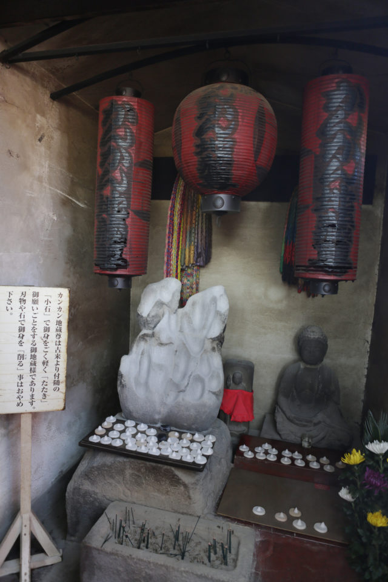
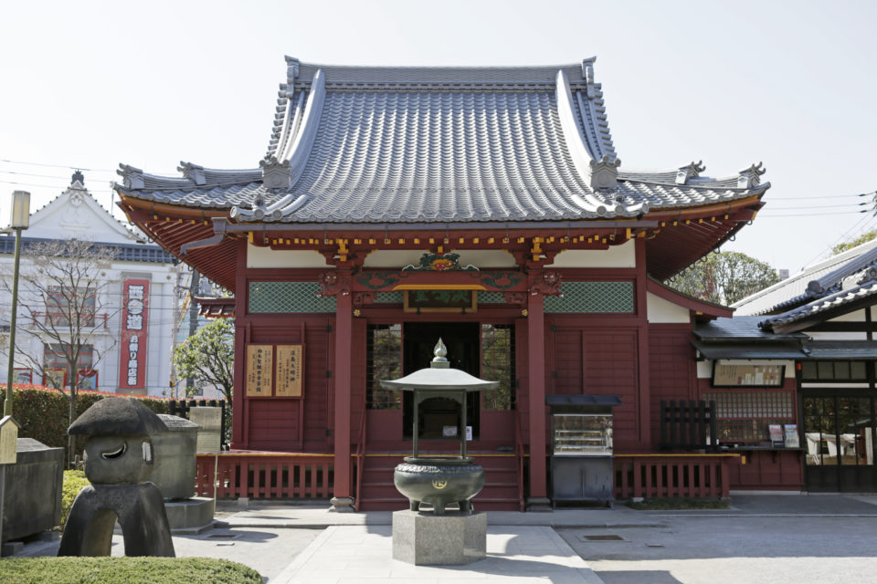
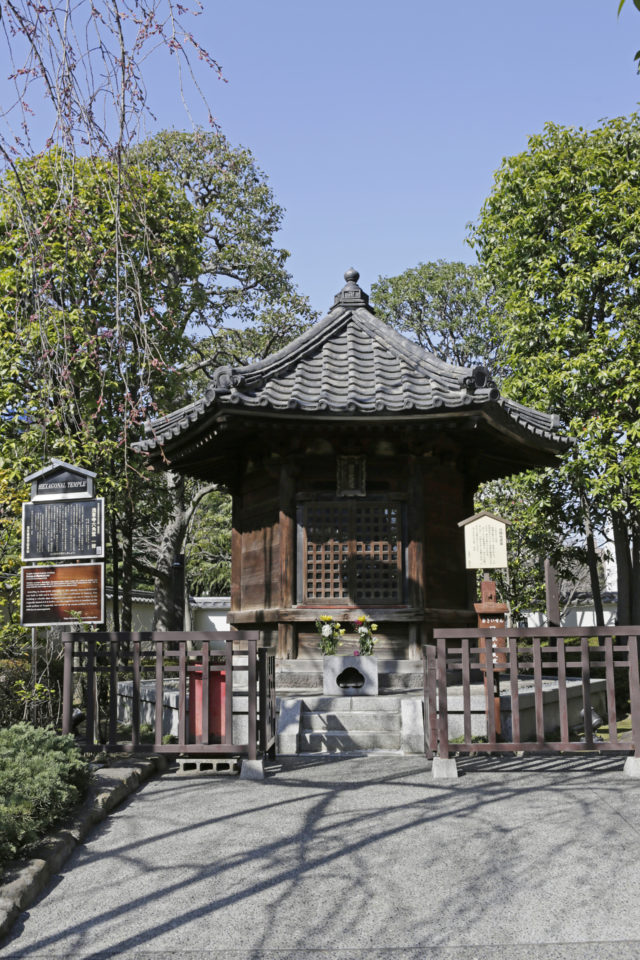

Токио · Асакуса · храм
Храм Сэнсо-дзи: «универмаг» благословений в Асакусе

Сэнсо-дзи рисовали на гравюрах укиё-э ещё в эпоху Эдо, и сегодня это одно из самых людных мест Токио. Но заходить сюда просто потому, что так принято, жалко: у храма с Каннон во главе найдётся помощь почти для любой просьбы.
Легенда
Золотой дракон и тысяча сосен

Кто-то идёт в храм, чтобы исполнилось желание, кто-то хочет избавиться от тревог и забот. Цели у всех разные, и Сэнсо-дзи в этом смысле особенный: исследователи называют его «универмагом богов и будд».
Главная святыня храма это статуя бодхисаттвы Сё-Каннон, которую никогда не показывают. По храмовой хронике, в 628 году, 18-го числа третьего месяца, два брата-рыбака вытащили её из реки Сумида и поставили в хижине под соломенной крышей. Позже местный знатный человек превратил свой дом в храм и поселил в нём Каннон. С этого и начался Сэнсо-дзи.
Говорят, когда статуя явилась людям, вокруг за одну ночь выросла тысяча сосен, а с неба спустился золотой дракон. Отсюда горное имя храма Кинрюдзан, «гора Золотого дракона». В честь явления Каннон храм проводит особую церемонию, и на ней исполняют «Танец золотого дракона». Дракон проходит по торговой улице Накамисэ, входит в главный зал, а потом танцует в западной части храмовой территории, и это зрелище стоит увидеть.
Каннон у Сэнсо-дзи очень милосердна: она снимает любые тревоги, отводит беды и спасает всех без разбора. Уже этого достаточно, но если просьба конкретная, стоит пойти в тот малый зал, который за неё отвечает.
Например, «Авасима-до» хранит женщин. «Тингодо» посвящён тануки, енотовидной собаке, и из-за игры слов («тануки» созвучно «та о нуку», «обойти других») сюда особенно часто приходят рассказчики ракуго и актёры кабуки. Есть ещё «Ёго-до», «Бэнтэн-до» и другие залы.
Залы
Куда идти с какой просьбой
Боитесь потерять работу: «Тингодо»

Если работа под угрозой, идите в «Тингодо». Здесь стоит статуя бодхисаттвы Дзидзо, у которой отбитую голову приставили на место. Отсюда поверье: «голова снова держится», а по-японски «не слетела голова» значит «не уволили». Поэтому сюда приходят служащие компаний.
Влюбились: «Кумэ-но Хэйнай-до»

«Кумэ-но Хэйнай-до» помогает в делах сердечных. Хэйнай Кумэ жил в начале эпохи Эдо (умер, по преданию, в 1683 году). Чтобы облегчить свою вину, он просил, чтобы его каменную статую «топтали» прохожие. Слово «фумицукэ», «топтать», звучит так же, как «фумицукэ», «передать письмо», то есть любовную записку. Так статуя стала покровительницей влюблённых, и жители Эдо, потерявшие голову от любви, стали приходить сюда с просьбами.
Хотите научиться ремеслу или искусству: «Бэнтэн-до»

В зале «Бэнтэн-до» хранится Бэндзайтэн, одна из «трёх Бэнтэн региона Канто». У богини редкие белые волосы, поэтому её зовут «Бэнтэн-старушка». Бэндзайтэн славится ловкими руками и помогает тем, кто хочет развить талант в искусстве.
Мечтаете разбогатеть: «Дзэнидзука-дзидзо-до»

В зале «Дзэнидзука-дзидзо-до» стоит каменная фигура «Кан-кан дзидзо». Говорят, когда-то это была статуя будды Дайнити. Имя появилось из-за звука: если прихожанин стучит по ней камнем и молится, раздаётся металлическое «кан-кан». Считается, что если принести соль и попросить о достатке, богатство придёт.
Хотите хорошо шить: «Авасима-до»

«Авасима-до» построили в эпоху Гэнроку (1688–1704), перенеся сюда почитание божества Авасима-мёдзин из Кады в провинции Кии, на месте которой лежит префектура Вакаяма. Этот зал хранит женщин, и каждый год 8 февраля здесь проходит «Хари-куё», молебен по старым иголкам. Поблагодарите иголки за службу и попросите, чтобы шитьё получалось лучше.
Очень нужно, чтобы сбылось: «Роккаку-до»

Зал построили в эпоху Муромати, примерно в XVI веке. Это одноярусное деревянное здание шестиугольной формы, памятник культуры столичного округа Токио и самое старое деревянное строение в городе. Здесь хранится «Хигири-дзидзо». Если молиться ему, заранее назначив число дней, желание, как говорят, исполнится.
История
Почему у храма так много залов
Столько залов появилось потому, что Сэнсо-дзи в своё время пришлось самому искать средства на жизнь. Строить залы и пагоды сёгунат не помогал, и храм платил за всё сам. К тому же у Сэнсо-дзи не было постоянных семей-прихожан, закреплённых за храмом, поэтому ему было важно связать себя с как можно большим числом людей.
Храм, который был под покровительством рода Токугава, постепенно стал храмом для простых людей и начал отвечать на их самые разные просьбы. Есть и другое толкование: само разнообразие залов на территории выражает обет Сё-Каннон спасать любого человека. Сэнсо-дзи готов откликнуться почти на любую просьбу, так что стоит прийти сюда за милостью Каннон.
Храм Сэнсо-дзи
- Адрес
- Токио, Тайто, Асакуса, 2-3-1
- Телефон
- +81 3-3842-0181
- Часы работы
- главный зал 6:00–17:00, с октября по март 6:30–17:00 (по официальному сайту, 2026 год)
- Сайт
- senso-ji.jp
Фото: Хироюки Кудо, momo.